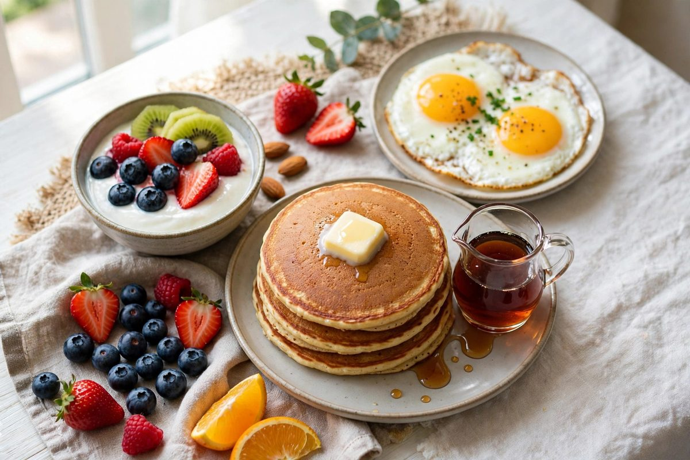

Home » Guides
Gluten-Free Breakfast

Breakfast is often the hardest gluten-free meal, because so many breakfast foods are based on wheat: toast, cereal, pastries, and croissants. But there are plenty of naturally gluten-free breakfasts, and many of them are healthier than the wheat versions they replace. Eggs, fruit, yoghurt, oats, and rice all make good breakfasts, and gluten-free bread and pancakes are easy once you know how. This guide gives breakfast ideas for busy weekdays and slow weekends, and shows how to avoid the sugar trap in gluten-free breakfast foods.
Naturally gluten-free breakfasts
Many of the best breakfasts are naturally gluten-free. Eggs in any form, with fruit or vegetables, are filling and quick. Greek yoghurt with berries and seeds is a good high-protein breakfast. Porridge made with certified gluten-free oats is warm, filling, and cheap. A smoothie with fruit, yoghurt, and oats works well on busy mornings. Rice porridge, made with leftover rice and milk, is a comforting option. These breakfasts need no special products and are often healthier than a gluten-free bread or cereal.
Gluten-free toast and bread
Gluten-free toast is best when the bread is toasted, because toasting improves the texture and flavour. Keep a loaf in the freezer and toast slices straight from frozen. Top toast with eggs, avocado, nut butter, or cheese. If you bake your own gluten-free bread, slice it before freezing so you can take out one slice at a time. Shop-bought gluten-free bread is convenient but can be expensive and high in sugar, so check the label. A toasted gluten-free bagel or English muffin is a good weekend option.
Gluten-free pancakes and waffles
Gluten-free pancakes are easy: use a 1-to-1 gluten-free flour blend in any pancake recipe, and let the batter rest for ten minutes before cooking. They are best made small and thin, because large pancakes are harder to flip. Serve with fruit, yoghurt, or a little maple syrup, and avoid sugary toppings. Gluten-free waffles need a waffle maker and a slightly thicker batter, but they freeze well and can be toasted from frozen. Make a batch on Sunday and freeze the extras for busy mornings.
Breakfast cereals and porridge
Many breakfast cereals contain wheat or barley malt, so check labels carefully. Certified gluten-free oats are the safest porridge choice, and they are cheap and filling. Gluten-free muesli and granola are available, but check the sugar content, because some are very sweet. Rice and corn cereals are often gluten-free, but check for a certified claim, because they may be made in factories that handle wheat. Porridge with fruit and seeds is usually the healthiest and cheapest gluten-free breakfast of all.
A better breakfast routine
A good breakfast routine makes gluten-free mornings easy. Choose three breakfasts you enjoy and rotate them through the week, for example porridge on Monday, eggs on toast on Tuesday, and yoghurt with fruit on Wednesday. Keep the ingredients for all three in the kitchen, so you never have to think in the morning. Prepare what you can the night before, such as overnight oats or a batch of muffins. A regular routine saves time, reduces stress, and means you start the day with a proper meal rather than skipping breakfast or grabbing a biscuit.
Frequently Asked Questions
Are oats gluten-free?
Oats are naturally gluten-free, but they are often grown and processed with wheat. Only oats labelled certified gluten-free are safe for celiac disease.
Can I eat normal breakfast cereal if I am gluten-free?
Most wheat, barley, and rye cereals are not gluten-free. Check the label for a certified gluten-free claim before buying.
What is the quickest gluten-free breakfast?
Greek yoghurt with berries, or a smoothie made with milk, fruit, and oats. Both take under five minutes.
Important: if you have celiac disease or a wheat allergy, always check labels and look for certified gluten-free products. This site is general information only — talk to your doctor or a registered dietitian before changing your diet.